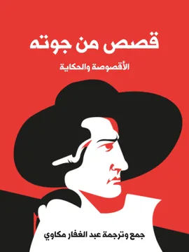

قصص من جوته: الأقصوصة والحكاية

قراءة عربية أصلية محددة النطاق في الصفحات 7، 8 من ملف PDF المرتبط، وليست تلخيصا كاملا للكتاب. نناقش ما تدعمه هذه المقاطع فقط.
حملة صيد تنتظر أميرًا عند زوجته
يفتتح «الأقصوصة» بمشهد سينمائي بطيء: ضباب الخريف الملبّد يشف رويدًا عن قاعات فناء القصر الفسيحة حيث تتحرك حملة الصيد في حركة مختلطة؛ هذا يمد الركاب وهذا يقصره، والكلاب تنبح فارغة الصبر في قيودها، وجواد ناري يعلن شجاعته. والجميع ينتظر الأمير الذي تأخر يودع زوجته، فتستعيد الحكاية زواجهما الحديث القائم على انسجام الطبعين ومشاركة كل منهما ميول الآخر، وعلى مبدأ والد الأمير: على رجال الدولة أن يقضوا أيامهم في العمل والإبداع قبل أن ينصرفوا إلى اللذة.
زاوية وحدود القراءة
قراءة في مطلع «الأقصوصة» من الصفحتين 7 و8 من «قصص من جوته» المترجمة، لا في القصة كاملة ولا في «الحكاية» المرافقة لها في الكتاب. تفاصيل حملة الصيد والزواج ومبدأ العمل من النص المترجم كما ورد. نسبة القصة لجوته كما يقدمها الكتاب لم تُراجع في مصادر خارجية.
الطبعة والقراءة
هذه النسخة من الكتاب صادرة ومتاحة مجانًا بموجب اتفاق قانوني بين مؤسسة هنداوي وأسرة السيد الدكتور عبد الغفار مكاوي.
تنزيل PDF المجاني ↓ القراءة والمصدر الرسمي ↗